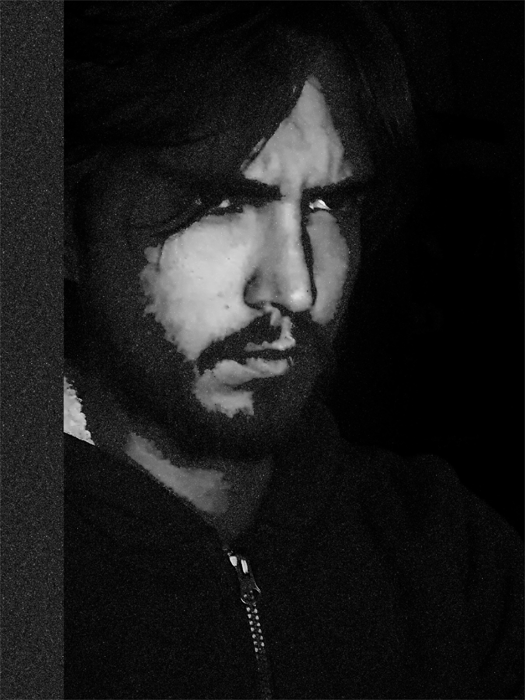

▶
MÓDULO 01FUTUROS, DESDE CERO- Qué es un contrato de futuros
- Ticks, puntos y tamaños de contrato
- Micros contra minis
- Las sesiones y sus horarios
- Tu primer chart
PACIENCIA
EL PROGRAMA
Ocho módulos que van del primer chart a la cuenta fondeada, el Terminal completo, la mesa en vivo de lunes a viernes y la puerta al respaldo de NorthPoint. Sin señales, sin humo, y con las reglas dichas de frente.
BOOTCAMP
LOS MÓDULOS · +48 HRS DE VIDEO GRABADO
EN VIVO · LUN–VIE
LOS PLANES
Mensual
Para probar. Cancela cuando quieras.
Un año
Sale a $992 al mes · ahorras $5,980
Cuatro meses de regalo contra el mensual, y prioridad en el Programa de respaldo de la mesa.
De por vida
Pago único · nunca vuelves a pagar
Doce meses del mensual son $17,880. Éste cuesta menos, y no se acaba.
El pago abre en unos días. Mientras tanto el Discord está abierto: ahí avisamos primero, y ahí se ve cómo trabaja la mesa antes de pagar nada. Entrar no cuesta.
ENTRAR AL DISCORD →CÓMO SE ARREGLA
Ocho módulos, del primer contrato de futuros a mantener viva una cuenta fondeada. Condiciones, no opiniones.
Cada trade escrito el mismo día en el Terminal, con las reglas de tu fondeadora vigiladas. Lo que no se mide, se repite.
La evaluación, con la mesa operando en vivo delante de ti. Y si llegas a rentable comprobable, la puerta al respaldo.
POR QUÉ CREERNOS
Es el récord de André, fundador de la mesa, y está completo —payout por payout— en su perfil. El Terminal es software que puedes abrir ahora mismo, no un PDF. Y la mesa opera en vivo de lunes a viernes: se ve lo que sale bien y lo que no.
Los resultados pasados no predicen nada, y la mayoría de quien intenta vivir de esto pierde dinero. Eso también es cierto y no te lo vamos a esconder.
TODO LO QUE ENTRA
SEIS FRENTES · UN SOLO ACCESO
No para el temario: todo se puede practicar en simulado, y así es como debe empezarse. Cuando quieras una evaluación de fondeo pagas la cuota de la fondeadora, que es aparte y no va a NorthPoint.
Los módulos son grabados: los ves cuando puedas. Lo único con hora es la mesa en vivo, que corre en la sesión de Nueva York.
Sí. El video es grabado y el Terminal no te exige horario. La mesa en vivo la ves cuando puedas; queda la comunidad para lo demás.
El acceso lo mandamos a mano, al correo con el que compraste. Hoy no es automático a propósito: preferimos hablar con cada quien entra a la mesa.
Tienes 7 días para pedir tu dinero de vuelta sin explicar por qué, mientras no hayas visto más del 30% del contenido. Se procesa por la misma vía del pago.
No, y no es negociable. Aquí se enseña a leer y a decidir; quien te da entradas te vuelve dependiente y no te hace trader.
LA MESA · VISTA SIMULADA, NO ES UNA CUENTA REAL
Quién responde

Fundador · Futures day trader
«La paciencia es la ventaja. Todo lo demás es ruido.»
Micro Nasdaq en la sesión de Nueva York, un trade al día. 13 payouts cobrados en dos fondeadoras. Construye el software con el que se mide la mesa — el terminal, el journal y los indicadores son suyos.
VER PERFIL COMPLETO →
Socio · Swing & day trader
«El swing te da el contexto; el día te da la entrada.»
Opera swing y día. Aporta la lectura de temporalidad alta que le pone marco a la sesión — dónde está parado el mercado antes de que abra Nueva York.